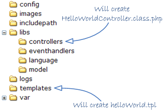
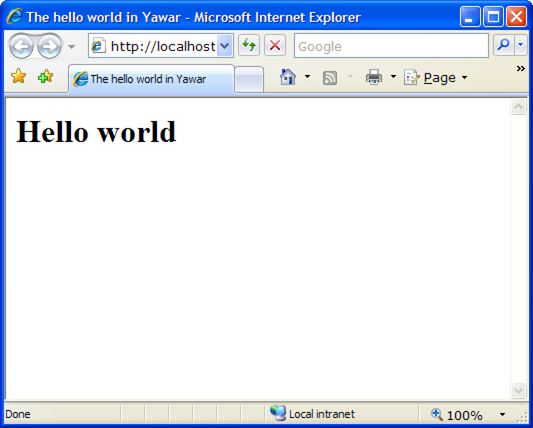

<table cellpadding="10" cellspacing="0" width="100%" border="0"><tr><td valign="top">
<div><a name=""></a><h1>The Hello World</h1>
  <div class="ref-purpose">Using the MVC</div>
 <div class="ref-synopsis"><p><center><div class="messagebox note metadata plainlinks"><table style="width:100%; background:none"><tr><td width="60"></td><td><p>Note that all the source code used in this tutorial is available to <strong>download</strong> and to <strong>see in action</strong>:
    <ul><li><a href="http://bamboo.lionframework.org/download/LION-STABLE/artifacts/build-29/Deliverables/tutorial1-1.4.29-stable.tgz">Download the source code</a></li>
      <li><a href="http://www.lionframework.org/tutorials/1.4.29-stable/tutorial1">See the application in action</a></li></ul></p></td></tr></table></div></center></p></div>
<h2>Table of Contents</h2>
<ul>

<a href="../../Lion/Tutorials/tutorial_Lion.tutorial1.pkg.html#intro">Goal</a><br />

<a href="../../Lion/Tutorials/tutorial_Lion.tutorial1.pkg.html#defining_the_controller">Defining the Controller</a><br />

<a href="../../Lion/Tutorials/tutorial_Lion.tutorial1.pkg.html#placing_the_controller">Placing the Controller</a><br />

<a href="../../Lion/Tutorials/tutorial_Lion.tutorial1.pkg.html#defining_the_view">Defining the View</a><br />

<a href="../../Lion/Tutorials/tutorial_Lion.tutorial1.pkg.html#executing_the_hello_world">Executing the Hello World</a><br />
</ul>

 <p></p>
 <span><a name="intro"></a><h2>Goal</h2><p>The goal of this tutorial is to learn how to define controllers in Lion. The application that we are going to develop just shows a 'Hello world' message.</p>
  <p>Here is what we will accomplish in this tutorial:
  <ul><li>Create a controller to handle the user request (libs/controllers/HelloWorldController.class.php)</li>
    <li>Modify the app/config/controllers.xml file to declare the controller as active</li>
    <li>Create a template to show the string 'Hello world' (templates/helloWorld.tpl)</li></ul></p>
  </span>
 <span><a name="defining_the_controller"></a><h2>Defining the Controller</h2><p>First, define which controller we're going to use in our application.</p>
  <center><div class="messagebox note metadata plainlinks"><table style="width:100%; background:none"><tr><td width="60"></td><td><p><strong>Naming convention:</strong></p>
  <p>By default, when an <a href="../../ActionController/__ActionController.html">__ActionController</a> receives a request to execute an action, it tries to find a method with the name of the action followed by the suffix 'Action'.</p>
  <p>i.e., to execute the action 'fooBar', an <a href="../../ActionController/__ActionController.html">__ActionController</a> will try to execute the 'fooBarAction' method.<br />
  If no action is specified, the controller will use the 'default' action, which then corresponds to the function &quot;defaultAction'.</p></td></tr></table></div></center>
  <p>Since we just want a page to show the 'Hello world' message, we only need a single action to handle it.<br />
  So, let's start by defining a new action controller to execute that action:</p>
  <p><div class="listing"><pre><ol><li><div class="src-line"><span class="src-php">&lt;?php</span></div></li>
<li><div class="src-line">&nbsp;</div></li>
<li><div class="src-line"><span class="src-doc">/**</span></div></li>
<li><div class="src-line"><span class="src-doc">&nbsp;*&nbsp;This&nbsp;is&nbsp;our&nbsp;action&nbsp;controller&nbsp;to&nbsp;handle&nbsp;the&nbsp;hello&nbsp;world&nbsp;action</span></div></li>
<li><div class="src-line"><span class="src-doc">&nbsp;*</span></div></li>
<li><div class="src-line"><span class="src-doc">&nbsp;*/</span></div></li>
<li><div class="src-line"><span class="src-key">class&nbsp;</span><span class="src-id">HelloWorldController&nbsp;</span><span class="src-key">extends&nbsp;</span><a href="../../ActionController/__ActionController.html">__ActionController</a>&nbsp;<span class="src-sym">{</span></div></li>
<li><div class="src-line">&nbsp;&nbsp;&nbsp;&nbsp;</div></li>
<li><div class="src-line">&nbsp;&nbsp;&nbsp;&nbsp;<span class="src-doc">/**</span></div></li>
<li><div class="src-line"><span class="src-doc">&nbsp;&nbsp;&nbsp;&nbsp;&nbsp;*&nbsp;The&nbsp;default&nbsp;action.&nbsp;It&nbsp;just&nbsp;set&nbsp;the&nbsp;message&nbsp;'Hello&nbsp;world'</span></div></li>
<li><div class="src-line"><span class="src-doc">&nbsp;&nbsp;&nbsp;&nbsp;&nbsp;*&nbsp;in&nbsp;a&nbsp;__ModelAndView&nbsp;instance&nbsp;and&nbsp;returns&nbsp;it.</span></div></li>
<li><div class="src-line"><span class="src-doc">&nbsp;&nbsp;&nbsp;&nbsp;&nbsp;*&nbsp;</span></div></li>
<li><div class="src-line"><span class="src-doc">&nbsp;&nbsp;&nbsp;&nbsp;&nbsp;*/</span></div></li>
<li><div class="src-line">&nbsp;&nbsp;&nbsp;&nbsp;<span class="src-key">public&nbsp;</span><span class="src-key">function&nbsp;</span><span class="src-id">defaultAction</span><span class="src-sym">(</span><span class="src-sym">)</span></div></li>
<li><div class="src-line">&nbsp;&nbsp;&nbsp;&nbsp;<span class="src-sym">{</span></div></li>
<li><div class="src-line">&nbsp;&nbsp;&nbsp;&nbsp;&nbsp;&nbsp;&nbsp;&nbsp;<span class="src-comm">//create&nbsp;a&nbsp;new&nbsp;__ModelAndView&nbsp;instance</span></div></li>
<li><div class="src-line">&nbsp;&nbsp;&nbsp;&nbsp;&nbsp;&nbsp;&nbsp;&nbsp;<span class="src-var">$model_and_view&nbsp;</span>=&nbsp;<span class="src-key">new&nbsp;</span><span class="src-id"><a href="../../Model/__ModelAndView.html">__ModelAndView</a></span><span class="src-sym">(</span><span class="src-sym">)</span><span class="src-sym">;</span></div></li>
<li><div class="src-line">&nbsp;&nbsp;&nbsp;&nbsp;&nbsp;&nbsp;&nbsp;&nbsp;<span class="src-comm">//Add&nbsp;the&nbsp;'hello&nbsp;world'&nbsp;message&nbsp;to&nbsp;the&nbsp;__ModelAndView:</span></div></li>
<li><div class="src-line">&nbsp;&nbsp;&nbsp;&nbsp;&nbsp;&nbsp;&nbsp;&nbsp;<span class="src-var">$model_and_view</span><span class="src-sym">-&gt;</span><span class="src-id">hello_world_message&nbsp;</span>=&nbsp;<span class="src-str">'Hello&nbsp;world'</span><span class="src-sym">;</span></div></li>
<li><div class="src-line">&nbsp;&nbsp;&nbsp;&nbsp;&nbsp;&nbsp;&nbsp;&nbsp;<span class="src-comm">//returns&nbsp;the&nbsp;__ModelAndView</span></div></li>
<li><div class="src-line">&nbsp;&nbsp;&nbsp;&nbsp;&nbsp;&nbsp;&nbsp;&nbsp;<span class="src-key">return&nbsp;</span><span class="src-var">$model_and_view</span><span class="src-sym">;</span></div></li>
<li><div class="src-line">&nbsp;&nbsp;&nbsp;&nbsp;<span class="src-sym">}</span></div></li>
<li><div class="src-line">&nbsp;&nbsp;&nbsp;&nbsp;&nbsp;&nbsp;&nbsp;</div></li>
<li><div class="src-line"><span class="src-sym">}</span></div></li>
</ol></pre></div></p>
  <p>In the class above we are defining our action controller by subclassing the <a href="../../ActionController/__ActionController.html">__ActionController</a> class (this is the most common and recommended practice in Lion).</p>
  <p>This action controller will have at the same time one single method: defaultAction. This method is called by default when executing the HelloWorld controller.<br />
  This method just creates a <a href="../../Model/__ModelAndView.html">__ModelAndView</a> instance, assigns the 'Hello world' message and returns it. That's all.</p>
  <center><div class="messagebox note metadata plainlinks"><table style="width:100%; background:none"><tr><td width="60"></td><td><p>Because class names are case insensitive in PHP, action codes will inherit this feature.</p>
  <p>i.e., the codes 'helloworld', 'HELLOWORLD' and 'HeLLoWorLd' are equivalents and correspond to the same controller: 'HelloWorldController'</p></td></tr></table></div></center>
  <p>Note that we are naming the controller class with the suffix 'Controller' due to the following mapping rule defined in the <strong>config/controllers.xml</strong> file:
  <div class="listing"><pre><ol><li><div class="src-line"><span class="src-php">&lt;?</span><span class="src-id">xml&nbsp;version&nbsp;</span>=&nbsp;<span class="src-str">&quot;1.0&quot;&nbsp;</span><span class="src-id">standalone</span>=<span class="src-str">&quot;yes&quot;</span><span class="src-php">?&gt;</span></div></li>
<li><div class="src-line">&lt;configuration&gt;</div></li>
<li><div class="src-line">&nbsp;</div></li>
<li><div class="src-line">&nbsp;&nbsp;&lt;controller-definitions&gt;</div></li>
<li><div class="src-line">&nbsp;</div></li>
<li><div class="src-line">&nbsp;&nbsp;&nbsp;&nbsp;&lt;controller&nbsp;code=&quot;*&quot;&nbsp;class=&quot;*Controller&quot;/&gt;</div></li>
<li><div class="src-line">&nbsp;&nbsp;</div></li>
<li><div class="src-line">&nbsp;&nbsp;&lt;/controller-definitions&gt;</div></li>
<li><div class="src-line">&nbsp;</div></li>
<li><div class="src-line">&lt;/configuration&gt;</div></li>
</ol></pre></div>
  This mapping rule lets Lion know that a 'code' for a controller corresponds to a class with the same name followed by the suffix 'Controller'. Thus, the 'HelloWorld' code will correspond to the 'HelloWorldController' controller class.<br /></p>
  <p>Now we have our action controller defined. Good job! :)</p></span>
 <span><a name="placing_the_controller"></a><h2>Placing the Controller</h2><p>In Lion, the <strong>libs/controllers</strong> directory in your application is reserved to place the Controller files.</p>
  <p>There is a mapping rule to let Lion know that any file in that directory with the suffix '.class.php' corresponds to a controller class with the same name without the suffix.<br />
  This mapping rule resides in the <strong>app/config/includepath.xml</strong> file:<br />
  <div class="listing"><pre><ol><li><div class="src-line"><span class="src-php">&lt;?</span><span class="src-id">xml&nbsp;version&nbsp;</span>=&nbsp;<span class="src-str">&quot;1.0&quot;&nbsp;</span><span class="src-id">standalone</span>=<span class="src-str">&quot;yes&quot;</span><span class="src-php">?&gt;</span></div></li>
<li><div class="src-line">&lt;classes&gt;</div></li>
<li><div class="src-line">&nbsp;</div></li>
<li><div class="src-line">&nbsp;&nbsp;&lt;!--&nbsp;Components&nbsp;--&gt;</div></li>
<li><div class="src-line">&nbsp;&nbsp;&lt;cluster&nbsp;name=&quot;Components&quot;&nbsp;path=&quot;/libs/components/...&quot;&gt;</div></li>
<li><div class="src-line">&nbsp;&nbsp;&nbsp;&nbsp;&lt;class&nbsp;name=&quot;*&quot;&nbsp;file=&quot;*.class.php&quot;/&gt;</div></li>
<li><div class="src-line">&nbsp;&nbsp;&nbsp;&nbsp;&lt;interface&nbsp;name=&quot;*&quot;&nbsp;file=&quot;*.interface.php&quot;/&gt;</div></li>
<li><div class="src-line">&nbsp;&nbsp;&lt;/cluster&gt;</div></li>
<li><div class="src-line">&nbsp;</div></li>
<li><div class="src-line">&nbsp;&nbsp;&lt;!--&nbsp;Event&nbsp;Handlers&nbsp;--&gt;</div></li>
<li><div class="src-line">&nbsp;&nbsp;&lt;cluster&nbsp;name=&quot;Event&nbsp;Handlers&quot;&nbsp;path=&quot;/libs/eventhandlers/...&quot;&gt;</div></li>
<li><div class="src-line">&nbsp;&nbsp;&nbsp;&nbsp;&lt;class&nbsp;name=&quot;*&quot;&nbsp;file=&quot;*.class.php&quot;/&gt;</div></li>
<li><div class="src-line">&nbsp;&nbsp;&nbsp;&nbsp;&lt;interface&nbsp;name=&quot;*&quot;&nbsp;file=&quot;*.interface.php&quot;/&gt;</div></li>
<li><div class="src-line">&nbsp;&nbsp;&lt;/cluster&gt;</div></li>
<li><div class="src-line">&nbsp;</div></li>
<li><div class="src-line">&nbsp;&nbsp;&lt;!--&nbsp;Controllers&nbsp;--&gt;</div></li>
<li><div class="src-line">&nbsp;&nbsp;&lt;cluster&nbsp;name=&quot;Controllers&quot;&nbsp;path=&quot;/libs/controllers/...&quot;&gt;</div></li>
<li><div class="src-line">&nbsp;&nbsp;&nbsp;&nbsp;&lt;class&nbsp;name=&quot;*&quot;&nbsp;file=&quot;*.class.php&quot;/&gt;</div></li>
<li><div class="src-line">&nbsp;&nbsp;&nbsp;&nbsp;&lt;interface&nbsp;name=&quot;*&quot;&nbsp;file=&quot;*.interface.php&quot;/&gt;</div></li>
<li><div class="src-line">&nbsp;&nbsp;&lt;/cluster&gt;</div></li>
<li><div class="src-line">&nbsp;&nbsp;</div></li>
<li><div class="src-line">&nbsp;&nbsp;&lt;!--&nbsp;Model&nbsp;classes&nbsp;--&gt;</div></li>
<li><div class="src-line">&nbsp;&nbsp;&lt;cluster&nbsp;name=&quot;Model&quot;&nbsp;path=&quot;/libs/model/...&quot;&gt;</div></li>
<li><div class="src-line">&nbsp;&nbsp;&nbsp;&nbsp;&lt;class&nbsp;name=&quot;*&quot;&nbsp;file=&quot;*.class.php&quot;/&gt;</div></li>
<li><div class="src-line">&nbsp;&nbsp;&nbsp;&nbsp;&lt;interface&nbsp;name=&quot;*&quot;&nbsp;file=&quot;*.interface.php&quot;/&gt;</div></li>
<li><div class="src-line">&nbsp;&nbsp;&lt;/cluster&gt;</div></li>
<li><div class="src-line">&nbsp;</div></li>
<li><div class="src-line">&nbsp;&nbsp;&lt;!--&nbsp;Plugin&nbsp;classes&nbsp;--&gt;</div></li>
<li><div class="src-line">&nbsp;&nbsp;&lt;cluster&nbsp;name=&quot;Plugins&quot;&nbsp;path=&quot;/libs/plugins/...&quot;&gt;</div></li>
<li><div class="src-line">&nbsp;&nbsp;&nbsp;&nbsp;&lt;class&nbsp;name=&quot;*&quot;&nbsp;file=&quot;*.class.php&quot;/&gt;</div></li>
<li><div class="src-line">&nbsp;&nbsp;&nbsp;&nbsp;&lt;interface&nbsp;name=&quot;*&quot;&nbsp;file=&quot;*.interface.php&quot;/&gt;</div></li>
<li><div class="src-line">&nbsp;&nbsp;&lt;/cluster&gt;</div></li>
<li><div class="src-line">&nbsp;&nbsp;</div></li>
<li><div class="src-line">&lt;/classes&gt;</div></li>
</ol></pre></div>
  Of course, it can be customized, i.e. to place the controllers in other location or just to change the file suffix.</p>
  <p>Continuing with our example, since our controller class is HelloWorldController, let's name the file as <strong>HelloWorldController.class.php</strong> and place it into the <strong>libs/controllers</strong> directory.</p></span>  
 <span><a name="defining_the_view"></a><h2>Defining the View</h2><p>Now it's time to define how the information will be shown to the user, it is, define the View (This is my favorite part :)</p>  
  <p>First, we need to understand how Lion resolves which View to use and how it sets up that View:<br />
  The <a href="../../Model/__ModelAndView.html">__ModelAndView</a> class is the one designed to provide all the necessary information to let Lion knows which View technology to use to render the user interface as well as which model data and which other information like the template to use in that process.<br />
  Lion just needs to retrieve a 'view code' from the <a href="../../Model/__ModelAndView.html">__ModelAndView</a> in order to create and setup a View. By default, if there is no information in the <a href="../../Model/__ModelAndView.html">__ModelAndView</a> regarding the view code, the one used for the 'action' will be the one used for the view: <strong>helloWorld</strong>.<br />
  <strong>Where is this behavior defined?</strong> In the app/config/views.xml file where you can edit the configuration section's <strong>view-definitions</strong>:<br />
  <div class="listing"><pre><ol><li><div class="src-line"><span class="src-php">&lt;?</span><span class="src-id">xml&nbsp;version&nbsp;</span>=&nbsp;<span class="src-str">&quot;1.0&quot;&nbsp;</span><span class="src-id">standalone</span>=<span class="src-str">&quot;yes&quot;</span><span class="src-php">?&gt;</span></div></li>
<li><div class="src-line">&nbsp;</div></li>
<li><div class="src-line">&lt;configuration&gt;</div></li>
<li><div class="src-line">&nbsp;</div></li>
<li><div class="src-line">&nbsp;&nbsp;&lt;view-definitions&gt;</div></li>
<li><div class="src-line">&nbsp;&nbsp;</div></li>
<li><div class="src-line">&nbsp;&nbsp;&nbsp;&nbsp;&lt;view&nbsp;code=&quot;*&quot;&nbsp;class=&quot;__SmartyView&quot;&gt;</div></li>
<li><div class="src-line">&nbsp;&nbsp;&nbsp;&nbsp;&nbsp;&nbsp;&lt;property&nbsp;name=&quot;template&quot;&nbsp;value=&quot;*.tpl&quot;/&gt;</div></li>
<li><div class="src-line">&nbsp;&nbsp;&nbsp;&nbsp;&nbsp;&nbsp;&lt;property&nbsp;name=&quot;eventHandlerClass&quot;&nbsp;value=&quot;*EventHandler&quot;/&gt;&nbsp;</div></li>
<li><div class="src-line">&nbsp;&nbsp;&nbsp;&nbsp;&lt;/view&gt;</div></li>
<li><div class="src-line">&nbsp;&nbsp;</div></li>
<li><div class="src-line">&nbsp;&nbsp;&lt;/view-definitions&gt;</div></li>
<li><div class="src-line">&nbsp;&nbsp;</div></li>
<li><div class="src-line">&lt;/configuration&gt;</div></li>
</ol></pre></div>
  The rule in the above configuration specifies that for every view code, use the <a href="../../View/__SmartyView.html">__SmartyView</a> class as a View, and assign to the <strong>template</strong> property the same 'view code' followed by the suffix <strong>.tpl</strong><br />
  Since we have not specified a view code, the one used for the action will be the one used for the view: <strong>helloWorld</strong>. So, according to the configuration, it implies to use the <a href="../../View/__SmartyView.html">__SmartyView</a> and set the <strong>template</strong> property with the value: <strong>helloWorld.tpl</strong>.
  So, voile: everything was already configured as we wanted :)<br />
  The only remainging issue that we need to address is the Smarty template (in /templates directory):</p>
  <div class="listing"><pre><ol><li><div class="src-line">&lt;<span class="src-id">html</span>&gt;</div></li>
<li><div class="src-line">&lt;<span class="src-id">head</span>&gt;</div></li>
<li><div class="src-line">&nbsp;&nbsp;&lt;<span class="src-id">title</span>&gt;<span class="src-id">The&nbsp;hello&nbsp;world&nbsp;in&nbsp;Lion</span>&lt;/<span class="src-id">title</span>&gt;&nbsp;</div></li>
<li><div class="src-line">&lt;/<span class="src-id">head</span>&gt;</div></li>
<li><div class="src-line">&lt;<span class="src-id">body</span>&gt;</div></li>
<li><div class="src-line">&nbsp;&nbsp;&lt;<span class="src-id">h1</span>&gt;<span class="src-sym">{</span><span class="src-var">$hello_world_message</span><span class="src-sym">}</span>&lt;/<span class="src-id">h1</span>&gt;</div></li>
<li><div class="src-line">&lt;/<span class="src-id">body</span>&gt;</div></li>
<li><div class="src-line">&lt;/<span class="src-id">html</span>&gt;</div></li>
</ol></pre></div>
  <p>This template has a placeholder in Smarty format: <strong>{$hello_world_message}</strong>.<br />
  Because we have to assign a variable to the model with the same name as the placeholder, the View will try to fill this with the value already stored in the model. Which, in our example, is  string 'Hello world'.</p>
  <p>Sorry, there aren't any more steps to do, your application is ready to be launched :)</p></span>
 <span><a name="executing_the_hello_world"></a><h2>Executing the Hello World</h2><p>Now it's time to execute our application, and for that purpose, we need to know how to build the appropriate URL to execute the action we want.</p>
  <div class="messagebox floatnote metadata plainlinks"><div class="floatnoteicon"></div><br><p>The default mapping rule for URLs in Lion is <strong>&lt;controller&gt;.&lt;action&gt;.html</strong></p>
  <p>i.e. if we want to execute the controller foo and a default action, the url should be <strong>foo.html</strong>.</p></div>
  <p>By making use of Lion's route scheme, just use the following url: <u>http://yourdomain/helloWorld.html</u></p>
  <p>Lion will deduce that the action controller that you are requesting is the one with code 'helloWorld'.</p>
  <p>Our application should be similar to the following one:</p>
  
  <p>And yes: we know that it's not a Picasso, but for the goal of this tutorial is enough :)</p>
  <p>The next tutorial shows how to declare model services and how to consume them from action controllers:<br />
  <a href="../../Lion/Tutorials/tutorial_Lion.tutorial2.pkg.html">The Advanced Hello World</a></p></span></div>
      </td></tr></table>